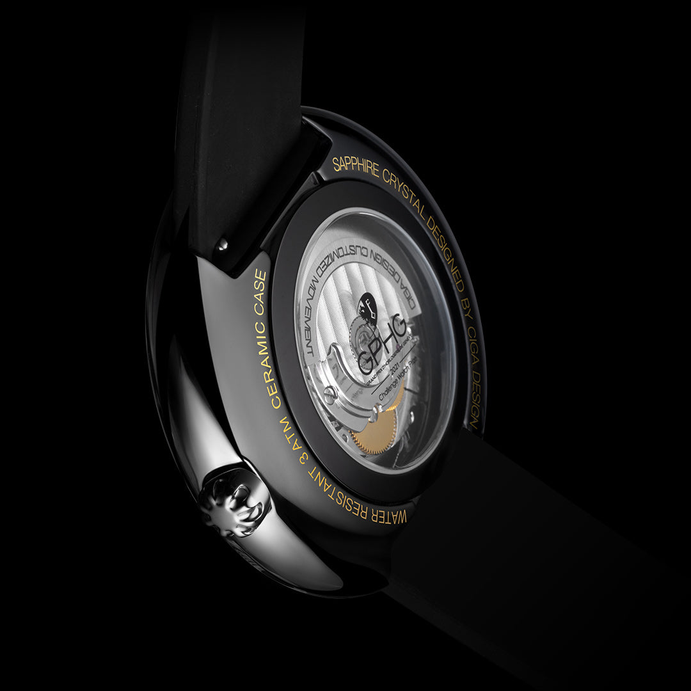
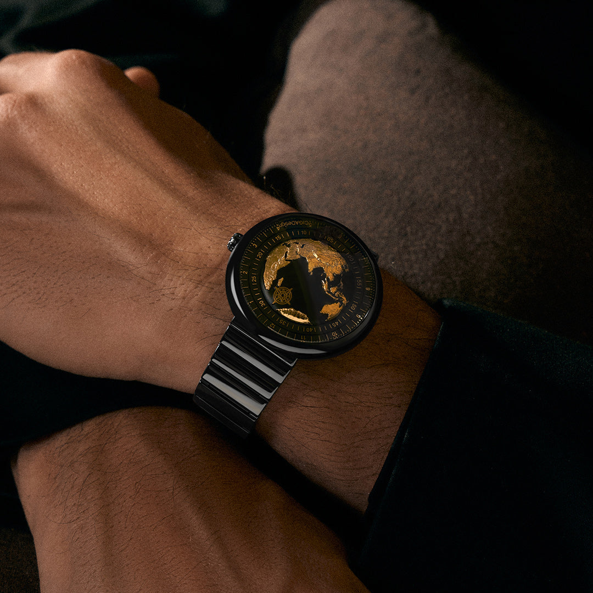
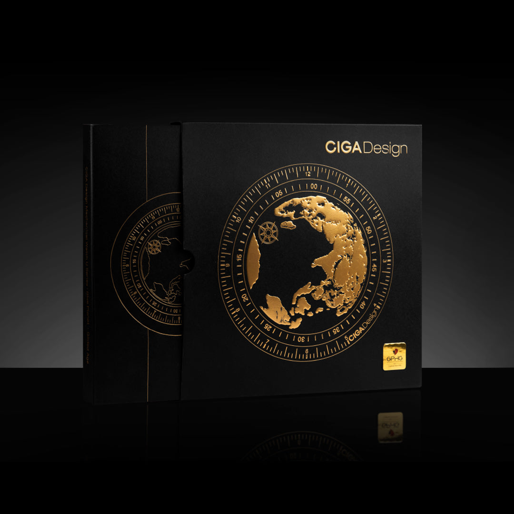
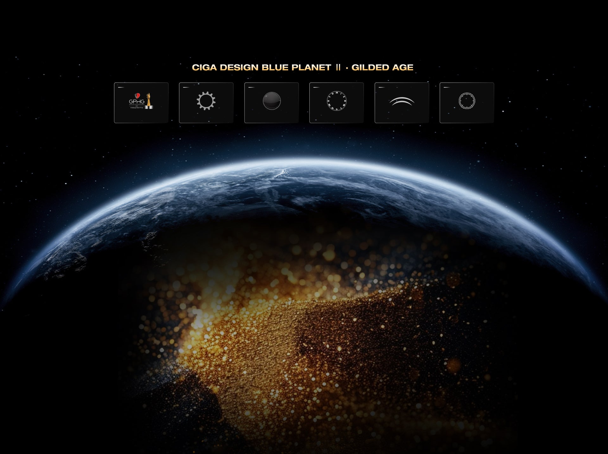

A edição dourada da família que conquistou o Challenge Watch Prize no GPHG 2021 — Genebra. Cerâmica ZrO₂ com acabamento ouro e movimento suíço CD-04-S.
Genebra 2021 — 208 competidores · Cerâmica + Ouro 24K
O Blue Planet II Gilded Age leva a tecnologia premiada no GPHG 2021 para um patamar visual mais alto: cerâmica com elementos dourados e movimento suíço de 41 horas.

O GPHG — Grand Prix d'Horlogerie de Genève — é conhecido como o Oscar da relojoaria mundial. Em 2021, entre 208 competidores de todas as grandes marcas do mundo, o Blue Planet II da CIGA design conquistou o Challenge Watch Prize na categoria de relógios de menor custo. Uma vitória que colocou a marca definitivamente no mapa global.
O Gilded Age é a interpretação mais luxuosa desta família vitoriosa: a cerâmica ZrO₂ recebe acabamentos dourados em elementos específicos do mostrador e caixa, criando um contraste entre o branco imaculado da cerâmica e o dourado dos detalhes — como o planeta Terra iluminado pelo Sol.

A tecnologia Asynchronous-Follow foi o que impressionou os juízes do GPHG 2021: o ponteiro dos segundos se move de forma assíncrona e flutuante sobre o mostrador, como se estivesse em órbita. Este efeito — que parece mágica mas é engenharia de precisão — está presente no Gilded Age com o mesmo refinamento da versão original premiada.
O calibre suíço CD-04-S com 26 joias opera a 28.800 semi-oscilações por hora com 41 horas de reserva de marcha — superando o padrão da família. O rotor personalizado com elementos dourados é visível pelo fundo de safira, completando a experiência dourada em cada detalhe.
O Challenge Watch Prize no GPHG 2021 — o Oscar da relojoaria mundial — conquistado entre 208 competidores.
Ponteiro dos segundos com movimento flutuante assíncrono — a tecnologia exclusiva CIGA design premiada em Genebra.
Movimento de base suíça com 26 joias, 28.800 vph e 41h de reserva — o coração da edição mais sofisticada da família.
Caixa em cerâmica de zircônia com acabamentos ouro 24K em elementos selecionados — luxo com substância tecnológica.
Cerâmica, ouro, calibre suíço e tecnologia premiada — cada especificação justifica o prestígio desta edição.

| Tamanho da Caixa | 46 mm |
| Espessura | 15,6 mm |
| Material da Caixa | Cerâmica ZrO₂ com acabamentos ouro 24K |
| Vidro | Cristal de safira anti-reflexo |
| Fundo | Transparente de safira com rotor dourado |
| Movimento | CIGA CD-04-S (base suíça) — Asynchronous-Follow |
| Frequência | 28.800 semi-oscilações/h (4 Hz) |
| Reserva de Marcha | ≥ 41 horas |
| Joias | 26 rubis |
| Resistência à Água | 3 ATM (30 metros) |
| Pulseira | Cerâmica com elementos dourados e fecho de borboleta |
| Largura da Pulseira | 22 mm |
| Família | Blue Planet II — vencedor GPHG 2021 |
A tecnologia que levou o Blue Planet II ao GPHG 2021: o ponteiro dos segundos se desacopla do mecanismo convencional e move-se de forma assíncrona sobre o mostrador, como um satélite em órbita. No Gilded Age, essa coreografia acontece sobre o mostrador com detalhes dourados — cada segundo marcado parece uma performance. O calibre suíço CD-04-S garante que a precisão sustente a poesia.
O Gilded Age carrega o maior prêmio da relojoaria mundial. Comunique à altura dessa herança.
O Blue Planet II Gilded Age é o relógio CIGA design com a credencial mais alta: família vencedora do GPHG 2021. Esse prêmio é o ponto de partida de toda narrativa — e a edição dourada adiciona uma camada de luxo visual que posiciona o produto no topo da linha. Use ambos os argumentos em conjunto.
Dez ângulos narrativos para maximizar o impacto do seu conteúdo sobre o Blue Planet II Gilded Age.
| # | Direcionamento | Foco Narrativo | Base do Script (Exemplo) |
|---|---|---|---|
| 01 | O Oscar da Relojoaria | GPHG 2021 como âncora de credibilidade | "Em 2021, entre 208 relógios, este ganhou o Oscar da relojoaria em Genebra." |
| 02 | O Planeta Dourado | Cerâmica + ouro como identidade visual | "Branco da cerâmica. Dourado dos acabamentos. Como o planeta Terra visto do espaço." |
| 03 | Ponteiro em Órbita | Asynchronous-Follow como experiência visual | "O ponteiro dos segundos não segue o ritmo convencional. Ele orbita. Isso é Asynchronous-Follow." |
| 04 | 208 Competidores, 1 Vencedor | Especificidade da conquista no GPHG | "208 relógios de todas as marcas do mundo. A CIGA design levou o troféu." |
| 05 | Suíço por Dentro | Calibre CD-04-S de base suíça | "Design premiado. Coração suíço. 41 horas de reserva. Tudo junto." |
| 06 | O Segredo no Fundo | Rotor dourado visível pelo fundo de safira | "Vire o pulso. O rotor dourado está trabalhando. Um detalhe só para quem tem." |
| 07 | Cerâmica que Não Risca | Dureza da cerâmica ZrO₂ com acabamento dourado | "Ouro que não descasca. Cerâmica que não risca. Luxo com substância." |
| 08 | 41 Horas de Precisão | Reserva de marcha superior ao padrão | "41 horas de reserva. Uma hora a mais que o padrão. Detalhe que mostra cuidado." |
| 09 | Para Celebrar Conquistas | Ocasiões especiais — presente de alto impacto | "Para presentear quem alcançou algo que merece ser marcado com ouro." |
| 10 | A Família que Ganhou Genebra | Posicionamento dentro da linha CIGA design | "O Blue Planet II ganhou Genebra. O Gilded Age é a sua versão mais sofisticada." |
Imagens oficiais do Blue Planet II Gilded Age disponíveis para uso em seu conteúdo.

